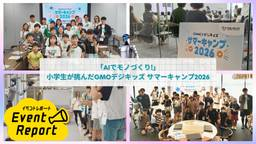

GMO Developers
https://developers.gmo.jp
「GMO Developers」は、GMOインターネットグループが開発者向けの技術情報やイベント情報をお届けするテックブログです。
フィード

【協賛レポート】Yoitoi Summit 2026｜良い問いから探る、これからのクリエイターのあり方と価値 1
1
GMO Developers
良い問いからデザインの未来を考える「Yoitoi Summit 2026」 Yoitoi Summit 2026は、より良いテクノロジーのあり方を探求するSpectrum Tokyoが開催する、対話型のデザインカンファレ […]
7時間前

「AIでモノづくり!」小学生が挑んだGMOデジキッズ サマーキャンプ2026 1
GMO Developers
2026年7月24日、渋谷のグループ本社で「GMOデジキッズ サマーキャンプ2026」を開催。 5日後の7月29日には、北九州（GMO kitaQオフィス）でも同じ企画を開催しました。 対象は小学4〜6年生で、テーマは「 […]
7日前

ConoHa VPS MCPで色々なAIエージェントを構築してみた＜Hermes Agent / OpenClaw / NanoClaw＞
GMO Developers
ConoHa VPS MCPについて MCP（Model Context Protocol）とは MCPは、AIエージェントが外部のシステムにあるさまざまなデータやツールと接続するための、Anthropicが提唱した標準 […]
8日前
AIがAIを開発し、AIが利用する。「最速」と「安全」を両立したConoHa VPS MCP開発の裏側
GMO Developers
AIとインフラのあいだにあったギャップ ——まず、「ConoHa VPS MCP」とはどのようなプロダクトなのでしょうか。 ——開発の背景もあわせて教えてください。 ———OSS版から約1年を経てリモート版がリリースされ […]
8日前
AIの最適解に「バグ」を起こせるか？GMO DESIGN AWARD 2026審査員長・引地耕太氏に聞く、AI時代におけるクリエイティブの価値
GMO Developers
引地 耕太氏｜クリエイティブディレクター／株式会社 VISIONs 代表取締役／一般社団法人 COMMONs 代表理事 GMO DESIGN AWARD 2026とは？ 今年で3回目の開催となるGMO DESIGN AW […]
19日前
【後編】受賞作品はこうして生まれた—GMO DESIGN AWARD 2025受賞者が語る、アイデアと制作の裏側
GMO Developers
仲村怜夏さん（株式会社yomiyomi） —制作でこだわった点や、工夫したポイントを教えてください —制作過程でAIツールをどのように活用しましたか。使ってみて意外だった発見や、工夫したポイントも教えてください —「応募 […]
1ヶ月前
【前編】受賞作品はこうして生まれた—GMO DESIGN AWARD 2025受賞者が語る、アイデアと制作の裏側
GMO Developers
GMO DESIGN AWARD 2026とは？ GMO DESIGN AWARD（以下、本コンテスト）は、GMOインターネットグループが主催する、18〜29歳の若手クリエイターを対象としたデザインコンテストです。 20 […]
1ヶ月前
【後編】「ショップ様のためになる」が判断の軸―インハウスデザイナーの役割と「売れるデザイン」
GMO Developers
大橋有理（おおはし・ゆうり）｜GMOメイクショップ株式会社 makeshop事業本部 営業部 制作チーム 異なる立場の声を読み解き、目的に沿った「最善」を探る —リリース後、購入者様の使いやすさとショップ様の要望が両立 […]
1ヶ月前
【前編】決済画面のリニューアルでCVR35%→50%に改善 「最短ワンステップ」を実現したUI設計の舞台裏
GMO Developers
大橋有理（おおはし・ゆうり）｜GMOメイクショップ株式会社 makeshop事業本部 営業部 制作チーム 制作会社での経験を経て、事業会社のインハウスデザイナーへ —まず、大橋さんのこれまでのご経歴を教えてください。 […]
1ヶ月前
【Expert cross #3・後編】組織と業界を動かすエキスパートへ GMOサイバーセキュリティ byイエラエ・三村聡志が描く、「安全なロボット」を実現する世界
GMO Developers
現場に立って気づいた「本当の課題」 ———エキスパートとして活動するなかで、ご自身に変化はありましたか。 ———小池さんから見て、三村さんの存在は組織にどんな影響を与えていますか。 ———広報や発信の面では、三村さんにど […]
1ヶ月前
【Expert Cross #3・前編】ソフト・ハードの両面から「話せる」エンジニアの流儀 GMOサイバーセキュリティ byイエラエ・三村聡志が語る、「伝えることで世界を良くする」エキスパートの在り方
GMO Developers
「話せるエンジニア」として、情報発信から教育までを幅広く行う 三村聡志（みむら さとし）｜GMOサイバーセキュリティ byイエラエ株式会社 小池 悠生（こいけ ゆうき）｜GMOサイバーセキュリティ byイエラエ株式会社 […]
1ヶ月前
【イベントレポート後編】JSAI2026にGMOインターネットグループが登壇｜GPUクラウドが支えるAI開発の最前線
GMO Developers
GMOインターネットグループ特設ブース 会場の一角には、GMOインターネットグループの特設ブースが設けられました。今回、グループ会社となるGMOインターネット株式会社も「GMO GPUクラウド」を紹介するべく本イベントに […]
1ヶ月前
【イベントレポート】JSAI2026にGMOインターネットグループが登壇｜オープニング挨拶と最前線の研究発表
GMO Developers
ロボティクス時代を開拓する「GMOロボッツ」プロジェクト 登壇者：栗林健太郎（GMOペパボ株式会社 取締役CTO / 博士（情報科学）） オープニングを飾ったプレナリーセッションでは、GMOインターネットグループを代表し […]
1ヶ月前
若手クリエイターへ問う、AI時代の「トキメキ」とは | GMO DESIGN AWARD 2026運営インタビュー
GMO Developers
GMO DESIGN AWARD 2026とは？ GMO DESIGN AWARD（以下、本コンテスト）は、GMOインターネットグループが主催し、今年で3回目を迎える、18〜29歳の若手クリエイター・デザイナーを対象とし […]
1ヶ月前
【開催レポート・後編】第6回 京大ミートアップ｜集合的予測符号化から見る人間とAIの共生
GMO Developers
Session3『集合的予測符号化と人間AI共生的アライメント』 谷口 忠大 氏京都大学 大学院情報学研究科 教授 最後に登壇したのは京都大学の谷口忠大氏。長年「記号創発ロボティクス」を掲げ、人間の発達過程をモデルにロボ […]
1ヶ月前
【開催レポート・前編】第6回 京大ミートアップ｜フィジカルAIとAI時代の知性
GMO Developers
イベント概要 第6回 京大ミートアップ supported by GMO考え・人と共生し・走るAI：ヒューマノイド競技大会への挑戦 日時：2026年6月25日（木） 17:30-20:30場所：京都大学 学術情報メディア […]
1ヶ月前
【EXPERT CROSS #2・後編】暗号技術の可能性を未来につなぐ、「暗号のおねぇさん」の歩み
GMO Developers
組織と本人の両方を変えていくエキスパート活動 ———前編でも、新たな接点が広がってきたというお話がありました。エキスパートとして活動するなかで、ご自身の中で変わったものがあれば教えてください。 ———菅野さんから見て、エ […]
1ヶ月前
【EXPERT CROSS #2・前編】「暗号のおねぇさん」が国際標準化の場で残していく、インターネットへの「爪痕」
GMO Developers
GMOから世界に羽ばたく「暗号のおねぇさん」 酒見由美（さけみ ゆみ）｜GMOコネクト株式会社 開発支援事業部 菅野哲（かんの さとる）｜GMOコネクト株式会社 執行役員CTO ———まずは、お二方のこれまでのご経歴をお […]
1ヶ月前
デザインカンファレンス「Yoitoi Summit 2026」をGMOYours・フクラスにて開催！
GMO Developers
Yoitoi Summit 2026とは Yoitoi Summitは、Spectrum Tokyoが主催する、デザイン・UX領域の実践者が集まるカンファレンスです。 2026年は「”良い問い”と […]
2ヶ月前
攻撃者優位の時代に問われる「使命感」 GMO Flatt Security＆GMOサイバーセキュリティ byイエラエが描く、AI時代のセキュリティ構想（後編）ーEngineering Journey
GMO Developers
「とてつもなく賢いエージェント」が実現する大転換 ———AIの台頭で、セキュリティエンジニア（ホワイトハッカー）の仕事の中身も変わってきているのではないでしょうか。 攻撃者優位の時代に問われる、ホワイトハッカーの「使命感 […]
2ヶ月前
頂上と裾野の両方から「底上げ」 GMO Flatt Security＆GMO サイバーセキュリティ byイエラエが支える、日本のサイバーセキュリティ（前編）ーEngineering Journey
GMO Developers
異なる場所から、同じゴールへ ――まずは、皆さんのご経歴と現在のお仕事をお聞かせください。 ――それぞれのプロダクトについて、概要を教えてください。 ――それぞれ、どんな思いでこのプロダクトに取り組んでいるのでしょうか。 […]
2ヶ月前
【開催レポート】八幡小学校 社会科見学 at GMO kitaQ
GMO Developers
ゲーム感覚で学ぶ“座学パート” まずは「インターネットってどうやってつながるの？」をテーマにした座学パートからスタート。約30分間、子どもたちにとって身近な世界を入り口に、インターネットの仕組みを学んでいきました。 「イ […]
2ヶ月前
デザインコンテスト「GMO DESIGN AWARD 2026」開催決定！3年目のテーマは「トキメキ」
GMO Developers
GMO DESIGN AWARDとは GMOインターネットグループが主催する「GMO DESIGN AWARD」は、18歳以上30歳未満の若手クリエイター・デザイナーを対象に、AIを制作プロセスに活用した作品を表彰するデ […]
2ヶ月前
ソフトウェアサプライチェーン攻撃から「エンジニアの背中」を守る。Takumi byGMO・「Guard」機能「Runner」機能 開発の舞台裏ーEngineering Journey
GMO Developers
開発者を守るセキュリティエンジニアの「かっこよさ」 ———まずは山川さんの経歴と、セキュリティの道に進んだきっかけを教えてください。 ———現在所属しているTakumi byGMOの開発チームでは、ソフトウェアサプライチ […]
2ヶ月前
【後編】Hack-1グランプリ2026 デモデーレポート｜グランプリ＆オーディエンス賞をW受賞！オンライン部門優勝チームにインタビュー
GMO Developers
オンラインデモデー最優秀賞チームインタビュー Hack-1グランプリ2026は、対面デモデーに先立ち、5/9（土）にオンラインデモデーも開催されました。全国から集まった学生たちが、画面越しに自分たちのプロダクトを披露し、 […]
2ヶ月前
「AIにデータ渡して大丈夫？」を約款から解決 プロダクトマネージャーが語る「主要AI約款比較」の設計思想と開発秘話
GMO Developers
AI時代を生きる「すべての方」に向けたプロダクト ——まずは、平田さんのご経歴と現在のお仕事をお聞かせください。 ——「主要AI約款比較」とは、どのようなサービスでしょうか。対象となる方も併せてお教えください。 保守的な […]
2ヶ月前
【後編】デザイナーとしての自分を形作る「気合と反復」。対話を通じて実践する、豊田恵二郎の制作哲学
GMO Developers
豊田恵二郎（とよだ・けいじろう）｜GMO Flatt Security株式会社 執行役員CCO 結果を出すための「泥臭い努力」でキャッチアップ —GMO Flatt Securityの立ち上げから関わられた豊田さんですが […]
2ヶ月前
【前編】創業時から変わらない「一貫性」で業界をリード GMO Flatt Security CCO・豊田恵二郎が語る、「エンジニアの背中を預かる」姿勢
GMO Developers
豊田恵二郎（とよだ・けいじろう）｜GMO Flatt Security株式会社 執行役員CCO eコマース⇒サイバーセキュリティの「筋の通った」事業ピボット —GMO Flatt Securityは、当初のeコマース領域 […]
2ヶ月前
【第2回・AI TALK】GMOサイバーセキュリティ byイエラエ・三村 聡志さんに聞く、AI時代の攻撃と防御のいま
GMO Developers
事業・公共・教育の3軸からセキュリティを追求 「物理制約を超える攻撃」に備える時代へ AIによるサイバーリスクはAIで対処 人間に残された「結びつける力」 まとめ AIが攻撃と防御の両陣営に行き渡ったいま、バグバウンティ […]
2ヶ月前
【中編】Hack-1グランプリ2026 デモデーレポート｜ついにグランプリ決定！最優秀賞チームに開発秘話を聞く
GMO Developers
ドキドキの結果発表 5時間にわたる長丁場を終え、プロダクトの魅力を出し切った学生たち。発表中にもらったアドバイスについてチーム内で話し合ったり、GMOインターネットグループのメンターに話しかけたりと、早くも「次につなげる […]
3ヶ月前
【前編】Hack-1グランプリ2026 デモデーレポート｜AI時代の学生ハッカソンに圧倒される2日間。「小さくなる日本」をどう表現する？
GMO Developers
Hack-1グランプリとは？ Hack-1グランプリは、デザイナーやエンジニアを志す学生が約1か月かけてアプリやサービスを開発するハッカソンイベントです。2026年のテーマは「小さくなる日本」。参加学生はチームを組み、社 […]
3ヶ月前
【Expert Cross #1】“人生2周目”のエキスパートが挑む、「つながり」の構築と認知拡大
GMO Developers
エキスパートに「なるべくしてなった」クリエイター・加藤さん ———加藤さんがエキスパートに立候補された理由と、丸山業務執行役員が推薦された理由をそれぞれお聞かせください。 ———今回でエキスパート2年目に入られる加藤さん […]
3ヶ月前
【第1回・AI TALK】SUZURI・minne事業部CTO 黒瀧さんに聞く、AI活用の現在地と未来
GMO Developers
事業部CTOの役割と、会社を超えた多彩な活動 画像チェック自動化とインフラコスト最適化で守る「マーケットの健全性」 エンジニアの役割変化がもたらした「新たなボトルネック」 AIエージェント「前提」のサービスを提案 まとめ […]
3ヶ月前
【Hack-1グランプリ2026 キックオフレポート】約150名の学生がハイブリッド形式で集結
GMO Developers
Hack-1グランプリとは？ Hack-1グランプリは、デザイナーやエンジニアを志す学生が約1か月をかけてアプリやサービスを開発するハッカソンイベントです。キックオフから最終発表までの期間を通して、企画、開発、発表を一貫 […]
4ヶ月前
【インタビュー後編】育休明けに直面した「AI時代」 GMOペパボのプリンシパルデザイナー・佐藤咲が歩む「共創」の道
GMO Developers
佐藤咲（さとう・しょう）｜GMOペパボ株式会社 コーポレートコミュニケーション室コーポレートデザインチーム プリンシパルデザイナー デザイナーのキャリアを拓く「共創」の姿勢 —AIからよりよいアウトプットを提供してもらう […]
4ヶ月前
【後編】エージェンティックAIの「アウトプット品質安定化」を実現 GMOインターネットが実践する「ハーネスエンジニアリング」とは？ーEngineering Journey
GMO Developers
自動化で品質向上&業務効率化を図り、より本質的な問題に取り組める環境を整える ———現在各社が提供する生成AIはモデルごとに得意・不得意があると思いますが、ハーネスの設計を変えることで、同モデル内でも出力やパフォ […]
4ヶ月前
【後編】『SECCON14 電脳会議』イベントレポート｜AI時代におけるCTFの意義＆脆弱性診断への「活かし方」
GMO Developers
Open Conference 講演者：GMO Flatt Security株式会社 プロフェッショナルサービス部 石川 琉聖 講演タイトル：LLMがCTFと脆弱性診断をどう変えていくのか 日時：2/28(DAY1) 1 […]
4ヶ月前
【前編】『SECCON14 電脳会議』 イベントレポート｜「横のつながり」で深まる、ホワイトハッカーの連帯感
GMO Developers
『インターポールAIクエスト（CTF）』：AIに支配された空間で発生したサイバー犯罪に挑む Day1のRoom4で開催された『インターポールAIクエスト（CTF）』は、GMOサイバー犯罪対策センターの福森が監修したワーク […]
4ヶ月前
[協賛レポート] 『SECCON14 電脳会議』
GMO Developers
イベント概要 名称：SECCON14 電脳会議開催日：2026年2月28日（土）- 3月1日（日）会場：浅草橋ヒューリックホール＆カンファレンス主催：SECCON 実行委員会公式サイト：https://www.secco […]
4ヶ月前
ハーネスエンジニアリングの本質 ー従来の開発規律を、エージェントが回せるように再設計する
GMO Developers
はじめに こんにちは。GMOインターネットの平野です。 以前、ハーネスエンジニアリングの紹介記事では、ConoHa VPS MCPサーバー開発で実践したハーネスエンジニアリングの具体的な仕組みを紹介しました。「何をやった […]
4ヶ月前
【前編】エージェンティックAIの「アウトプット品質安定化」を実現 GMOインターネットが実践する「ハーネスエンジニアリング」とは？ーEngineering Journey
GMO Developers
AIの「手綱」を握り、アウトプットの質に再現性を持たせる ——まず前提として、「ハーネスエンジニアリング」とはどのような概念なのでしょうか。 ——ハーネスエンジニアリングの取り組みを始めたきっかけは何だったのでしょうか。 […]
4ヶ月前
【インタビュー前編】育休明けに直面したAI時代―GMOペパボプリンシパルデザイナー・佐藤咲が歩む「共創」の道
GMO Developers
佐藤咲（さとう・しょう）｜GMOペパボ株式会社 コーポレートコミュニケーション室コーポレートデザインチーム プリンシパルデザイナー 「時間のある限り働く」から「AIで悩む時間を圧縮する」へ —まず、佐藤さんのご経歴と現在 […]
4ヶ月前
SUZURI APIを使ってSUZURI MCP Serverを作った話
GMO Developers
はじめに MCPは、AIアシスタントが外部のツールやデータソースと連携するための標準プロトコルです。Claude DesktopやClaude CodeなどのMCPクライアントに対応したアプリケーションから、さまざまな外 […]
4ヶ月前
SECCON 14 電脳会議開催レポート
GMO Developers
SECCONとは 実践的情報セキュリティ人材の発掘・育成、技術の実践の場の提供を目的として、競技やワークショップを提供するイベントです。 世界でもトップレベルの技術力を競い合う CTF である「SECCON CTF」、C […]
4ヶ月前
ヒューマノイドRL手法の全体像と最前線 ー 歩行からスポーツまで ー【2026年3月】
GMO Developers
はじめに ここ数年で、ヒューマノイドロボットのハードウェアが急速に実用レベルに近づきました。Unitree、Fourier、AgiBotなど複数メーカーから開発可能なヒューマノイドが登場し、研究者が手の届く選択肢が一気に […]
5ヶ月前
【イベントレポート・後編】インハウス動画サミット2026｜インハウスにおける「指標」と「AIの可能性」
GMO Developers
はじめに 100名以上が社内外から来場し、インハウス動画への関心の高さがうかがえた「インハウス動画サミット2026」。「事業成長を加速させる『動画内製化』のリアル」では、動画内製化に取り組む企業担当者が登壇しました。 G […]
5ヶ月前
技術書典20にトップスポンサーとして協賛いたします
GMO Developers
技術書典とは 技術書典は技術書にフォーカスした技術共有と普及のためのイベントです。技術書を中心とした様々な本を頒布する同人誌即売会です。 エンジニア・デザイナー・研究者・学生が、自分の知見を「本」という形で共有する場とな […]
5ヶ月前
2025年度の活動報告：エキスパートとして向き合ったデザイン組織と発信の形。
GMO Developers
2025年度の主な活動 2025年、岡本はこれまでのキャリアで培った経験知を組織へ還元すること、そしてエキスパート制度を活かした最先端のインプットを得ることを軸に、以下のような活動を行ってきました。 イベント・カンファレ […]
5ヶ月前
RubyKaigi 2026にトップスポンサーとして協賛いたします
GMO Developers
RubyKaigiとは RubyKaigiはプログラミング言語Rubyに関する世界最大級の国際カンファレンスです。最先端の技術セッションの数々が披露されるプログラマーズカンファレンスとして、またRubyの処理系自体の開発 […]
5ヶ月前
なぜ「日本一の走り」をヒューマノイドへ生かすのか――「GMOインターネットグループ陸上部 – GMOロボッツ」発足の背景｜後編
GMO Developers
発足までの道のり ここからは、記者会見までの道のりを時系列で振り返ります。 まずは走らせる準備 最初に取り組んだのは、ヒューマノイドを「走れる状態」に近づけるための準備でした。 私たちの手法では、まずシミュレーション環境 […]
5ヶ月前